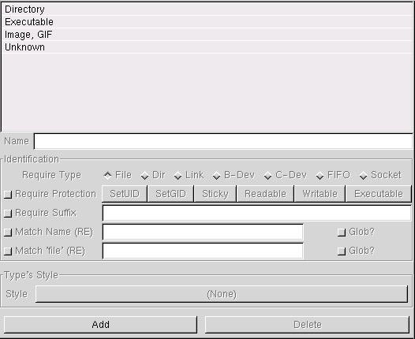
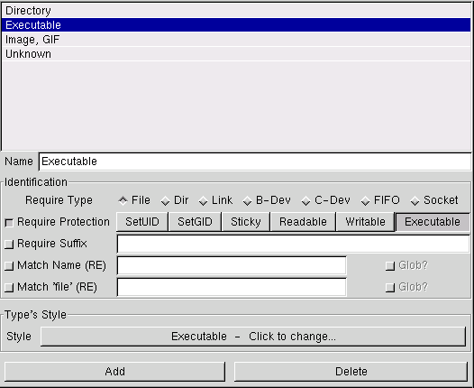

|
|
| LICENSE | NOTES | GUIDE | INTRO | USAGE | CONFIG | HISTORY | CONTRIBUTING | ACKS |
File types are used to identify the files on your disks, and classify them into different types. Before you read about how to set up your own types, I really recommend that you check out the usage section on file types, so you know what a type is, how they work et cetera.
Here's a couple of screenshots of the configuration for file types, cropped as usual. The one on the left shows the page when no type is selected, the one on the right with a type selected:


Dominating the page is a big list of all currently defined file types. They are listed in alphabetical order, to make finding a given type simpler. Also, if you name your types in the way suggested in the types chapter, the sorting helps keep related types together. Since there's no complex structure imposed on file types (as there is with file styles), this can really help keep things organized.
Below the list is a text entry widget labeled "Name". Not surprisingly (I hope!), this is where you give the name of the selected type. Type names need not be unique, so you can just about enter anything you like.
Below the name field, there's a large frame labeled "Identification". This is where you control how the type attempts to identify files. There are five levels of identification available: intrinsic type, protection, suffix, name RE, and 'file' RE. Read all about it in the types chapter, as usual. Of these methods, all but the first are optional; you don't need to specify them. You can select any combination of the four latter; to include a rule, just click its check button and fill in any parameters required by the rule. Details on the parameters available:
Defining the intrinsic type to require is pretty simple; just click one of the radio buttons. Note that each type must require exactly one intrinsic type. "Link" stands for soft (a.k.a. "symbolic") link, "B-Dev" and "C-Dev" are abbreviations for block and character device, respectively.
To use protection matching, first activate the rule by clicking its check button. Then operate the six toggle buttons on the right until the combination you want is shown. Remember that if you select a protection flag (such as "Sticky"), you are requiring files to have the Sticky bit set. There is no way of specifying negative protection requirements.
If you wish to require files of this type to have a common suffix in their names, activate
this rule and type the suffix in the text entry box. Remember that gentoo doesn't
have a very complex notion of what a suffix is; it's just the last part of a name. Often,
a dot (.) is used to separate a type-indicating suffix from the rest of the
name. Since gentoo doesn't know about this, you simply need to include that dot in
the suffix specification. For example, enter .gif to find GIF images.
If a simple suffix isn't enough to identify the files you're after (Amiga tracker modules,
anyone?), chances are this rule will do the job. It allows you to specify a full regular
expression, and then attempts to match that against file names. This is incredibly powerful,
since it can be used to find (quite) arbitrary names. The most typical use is pretty
mundane, though; RE matching is very handy when you need more than one suffix. A classic
example is .+\.jpe?g, which matches against file names that end in a dot
followed by jpeg or jpg. For more information about regular
expressions and what they can do, read on.
If you don't need quite the power of regular expressions, you can use patterns of the same type as used in many shells. These patterns are (for reasons unknown to me) called glob patterns. If you want gentoo to treat your RE as a glob pattern, click the check button labeled "Glob?" to the right of the input field. For the details on how the glob->RE translation is done, read here.
The last kind of rule is the most powerful. This envokes the external command 'file' on
files, and allows you to specify a regular expression which when checked against the
output of 'file' must produce a match. As with the name matching, you can specify that
the expression you entered is actually a glob pattern by activating the button next
to the input field. For more information about 'file', see the
file types chapter, and these manual pages: file(1) and magic(4)
on your system.
Once you have the type's identification rules nailed down, it's time to specify how you want matching files to be treated (displayed, viewed, etc). You do this by linking the type to a style. Hopefully you have already defined the style you want, otherwise it's a good idea to do that now. When you know that the style you want for this type exists, click the big button in the "Type's Style" frame. This brings up a simple dialog where you can select the style you want. The name of the selected style is shown in the button. If no particular style has been selected, it says "Root".
To add a new type, click the "Add" button. This creates a new, empty type, and makes it the current one. The first thing you should do after creating a new type is to rename it; therefore the name entry box is focused automatically.
To delete a type, select it and then click the "Delete" button. The type is immediately killed, no questions asked. You cannot delete the "Unknown" type.
{kind=link}